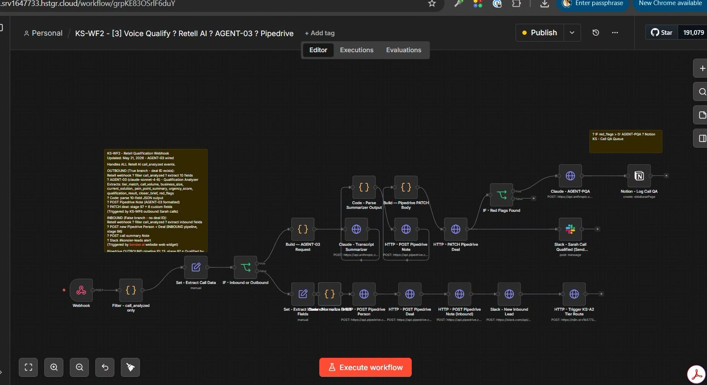

N8N · PIPEDRIVE · AI01
From call transcript to qualified next step
The situation. Sales calls contain useful signals, but they disappear into notes and inboxes. The system. An n8n webhook filters analyzed calls, sends the transcript to an AI summarizer, patches Pipedrive, and routes red flags to a Notion QA queue and Slack. The payoff. Reps get a consistent deal record and managers see the calls that need attention.
Webhook logicClaude APICRM enrichment